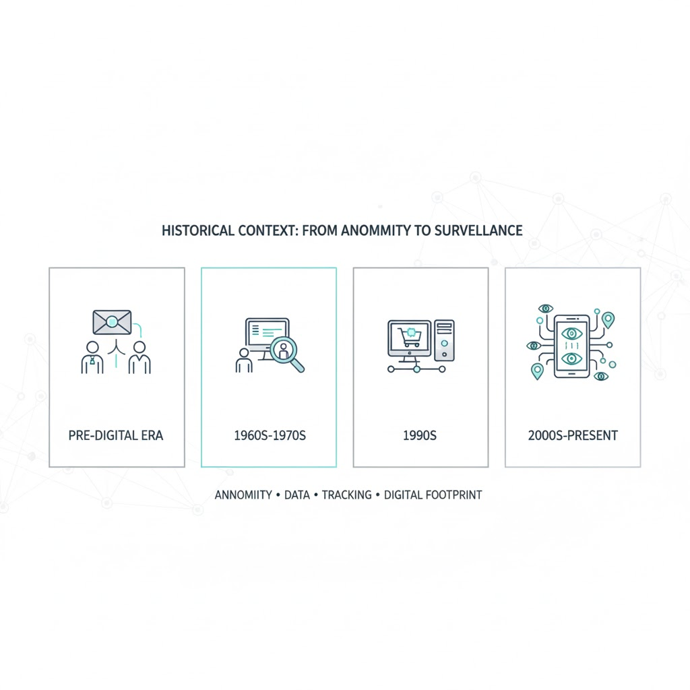
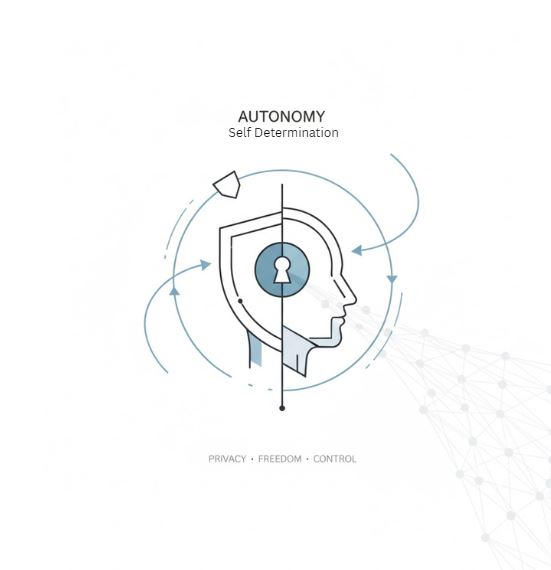
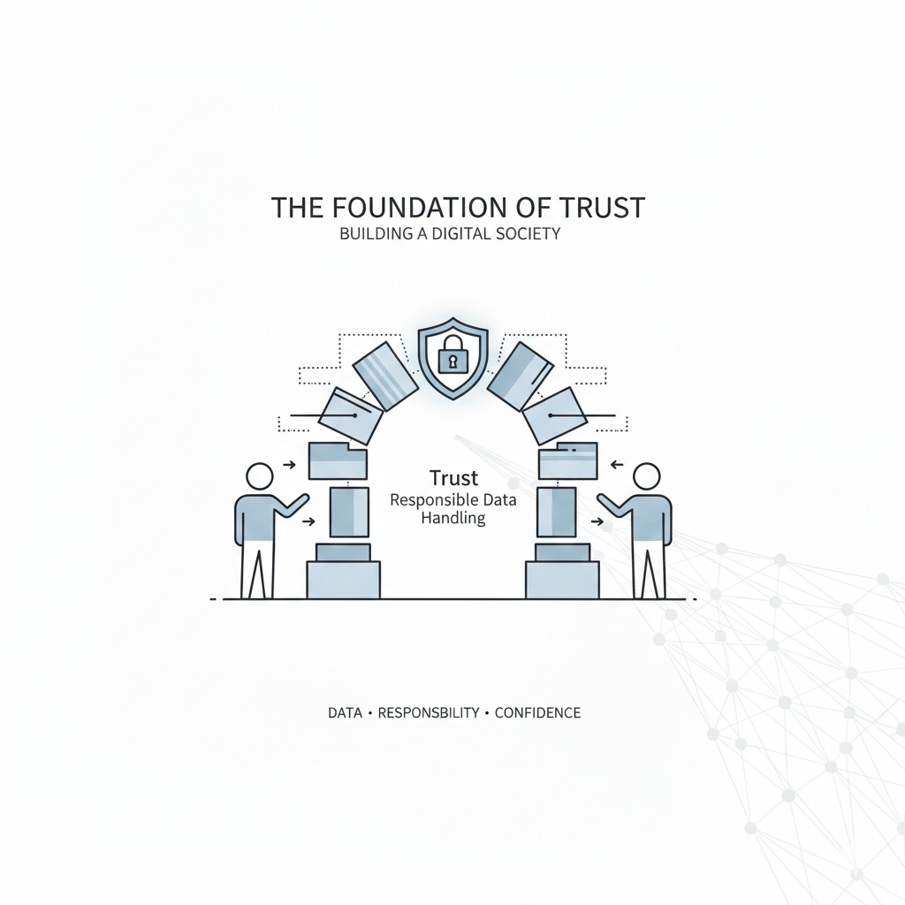
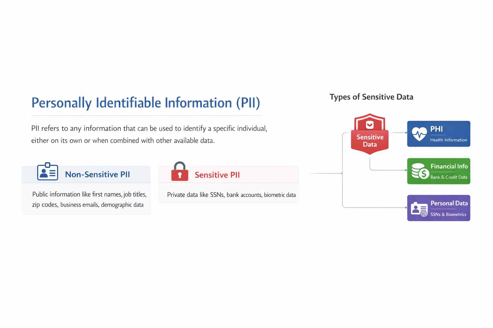
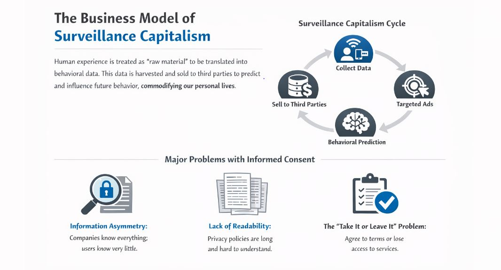
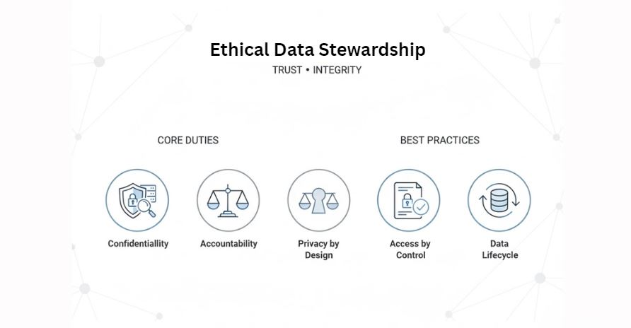

Social and Professional Issues in Computing
Understanding Data Privacy as a Critical Ethical Foundation
Privacy is not a new concept, but its challenges have fundamentally shifted as technology evolved.
Privacy was largely physical. Conversations were private unless someone was physically eavesdropping, and mail was sealed to ensure confidentiality.
The first concerns emerged with the rise of computers, as governments gained the ability to create massive databases to store citizen information.
Internet commercialization and E-commerce led to the systematic collection of user data for marketing and targeted advertising.
Smartphones and social media create a constant digital footprint. Devices now track location and behavior in ways users often don't fully comprehend.

Privacy is fundamental to our ability to live a life of our own choosing. When our personal data is harvested and used to manipulate our behavior or steer our decisions, our individual autonomy is significantly diminished.

The collection and usage of data can create or reinforce deep social inequalities. For instance, using biased data sets to deny individuals loans or employment based on perceived risk factors is a critical matter of social justice.

The modern data economy cannot operate without trust. If people lose confidence that companies and institutions will handle their data responsibly, they will naturally disengage from services, leading to wider societal friction.
PII refers to any information that can be used to identify a specific individual, either on its own or when combined with other available data.
Publicly available information that typically poses little to no risk if disclosed. Examples include first names, job titles, zip codes, business emails, and general demographic data.
Private information that can directly identify an individual. This requires the highest level of security and often has specific legal protections. Examples include SSNs, bank accounts, and biometric data.

Includes medical records, treatment histories, lab results, diagnoses, and health insurance billing details.
Highly sensitive data revealing racial origin, political opinions, religious beliefs, sexual orientation, or disabilities.
Credit ratings, tax info, transaction histories, and trade secrets critical to a company's competitive edge.
In this economic system, human experience is treated as a "raw material" to be translated into behavioral data.
This data is harvested and sold to third parties to predict and influence future behavior, effectively commodifying our personal lives without our full understanding or consent.

Landmark legislation signed by President Benigno S. Aquino III to protect personal information across public and private sectors while ensuring the free flow of information for innovation.
Subjects must be informed about how their data is collected and processed.
Personal data must only be collected for specific and legal reasons.
Collection must be adequate, relevant, and limited to what is truly necessary.
Organizations must designate a Data Protection Officer (DPO) and notify the National Privacy Commission (NPC) and subjects within 72 hours of a breach that poses a serious risk.
IT professionals are accountable for ensuring that personal data is handled in an ethical, transparent, and legally compliant manner. Their duties go beyond simple network security.
